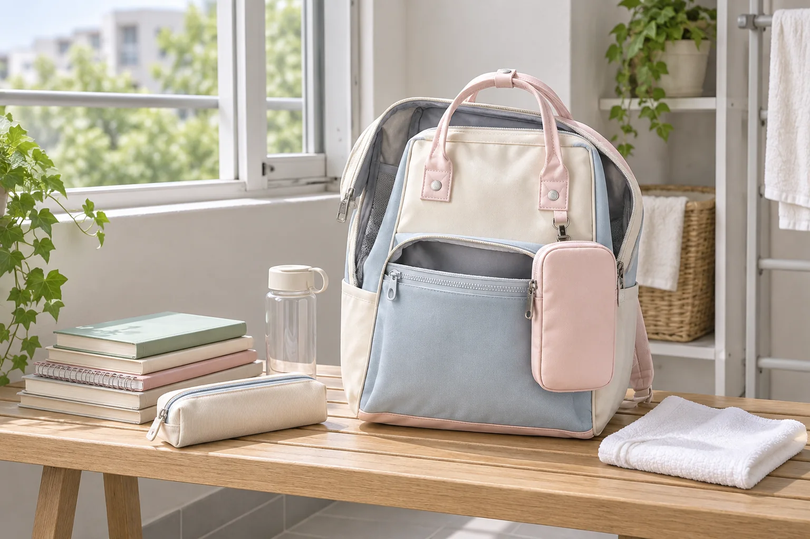

백팩 냄새와 눅눅함 줄이는 법: 매일 5분 환기 루틴

매일 쓰는 백팩은 닫힌 공간에 물병, 간식, 손수건과 여러 소지품이 함께 머뭅니다. 냄새가 느껴질 때 향이 강한 제품부터 뿌리면 원인을 찾기 어렵고 소재에 자국을 남길 수도 있습니다. 퇴근이나 하교 후 내용물을 비우고 안쪽을 짧게 확인하는 습관이 가장 먼저 할 수 있는 관리입니다.
1. 냄새의 원인이 될 물건부터 꺼내세요
메인 수납부뿐 아니라 작은 포켓까지 모두 비웁니다. 빈 음료 용기, 사용한 손수건, 음식 포장, 젖은 우산 커버가 남아 있지 않은지 확인하세요. 냄새는 가방 원단 자체보다 안에 오래 머문 물건이나 바닥의 작은 부스러기에서 시작되는 경우도 있습니다.
2. 마른 먼지와 부스러기를 먼저 정리하세요
가방을 무리하게 뒤집지 말고 입구를 아래로 향하게 해 가볍게 털어냅니다. 안감과 솔기 사이의 마른 먼지는 부드러운 솔이나 약한 흡입으로 제거하되 장식과 느슨한 실을 잡아당기지 않도록 주의하세요. 자세한 순서는 백팩 안감 청소 6단계에서 확인할 수 있습니다.
3. 지퍼와 포켓을 열어 5분부터 시작하세요
메인 지퍼와 내부·외부 포켓을 모두 열고, 가방이 찌그러지지 않게 세워 통풍이 되는 그늘에 둡니다. 매일 짧게라도 닫혀 있던 공기가 바뀌도록 하는 것이 목적입니다. 안쪽이 젖었다면 정해진 시간에 맞추기보다 완전히 마를 때까지 내용물을 넣지 마세요.
4. 젖은 물건은 가방 밖에서 말리세요
우산 커버, 운동복, 물기가 남은 물병은 별도 공간에서 충분히 말린 뒤 다시 넣습니다. 물병은 뚜껑과 패킹 상태를 확인하고, 음식과 화장품은 작은 파우치로 분리하세요. 비를 맞은 가방이라면 젖은 백팩 관리 순서에 따라 겉과 안쪽을 함께 말립니다.
5. 액체를 쓰기 전 관리 표시를 확인하세요
향수나 탈취제, 세정제를 바로 뿌리지 말고 제품 라벨과 판매 페이지의 관리 안내를 확인합니다. 원단, 코팅과 장식에 따라 사용할 수 있는 방법이 다릅니다. 부분 관리가 허용된 경우에도 눈에 띄지 않는 곳에서 먼저 시험하고, 넓은 범위를 한꺼번에 적시지 마세요.
소재별 기본 원칙은 백팩 소재별 표면 관리법에서 이어서 볼 수 있습니다.
6. 모양을 잡아 완전히 말린 뒤 보관하세요
사용하지 않는 날에는 내용물을 비우고 깨끗한 흰 종이나 마른 천을 느슨하게 넣어 형태만 받칩니다. 포켓이 눌린 채 밀폐된 공간에 오래 머물지 않게 하고, 통풍이 가능한 선반에 세워둡니다. 보관 방법은 백팩 모양을 오래 유지하는 보관법도 참고하세요.
귀가 후 5분 체크리스트
- 작은 포켓까지 내용물을 모두 확인했나요?
- 음식 포장과 젖은 천을 꺼냈나요?
- 바닥 모서리의 마른 부스러기를 비웠나요?
- 모든 지퍼와 포켓을 열어 통풍시켰나요?
- 안쪽이 완전히 마른 뒤 물건을 다시 넣었나요?
짧은 환기는 냄새를 감추는 방법이 아니라 원인이 가방 안에 오래 머물지 않게 하는 일상 점검입니다. No.1027의 색상과 내부 구성은 Himawari No.1027 상세 정보에서 확인할 수 있습니다.
참고·안내
- Himawari No.1027 제품 정보
- 제품마다 원단·코팅·장식이 다르므로 액체를 사용하기 전 해당 제품의 관리 표시를 우선 확인하세요.
- 대표 이미지는 Himawari No.1027 제품 사진을 참조해 만든 연출 이미지입니다.
자주 묻는 질문
백팩에 향수나 탈취제를 바로 뿌려도 되나요?
향으로 냄새를 덮기 전에 음식물, 젖은 천, 먼지처럼 원인이 되는 물건을 먼저 제거하세요. 제품에 액체를 사용하려면 가방의 관리 표시와 해당 제품의 사용 가능 소재를 확인해야 합니다.
가방은 햇빛에 말리면 더 빠르지 않나요?
강한 직사광선과 열은 원단 색이나 코팅에 영향을 줄 수 있습니다. 내용물을 비우고 지퍼와 포켓을 연 뒤 통풍이 되는 그늘에서 안쪽까지 충분히 말리는 편이 안전합니다.
환기해도 냄새가 계속 나면 어떻게 하나요?
숨은 포켓과 바닥 모서리에 오염이나 습기가 남았는지 확인하세요. 제품 안내에 따른 관리 후에도 냄새가 지속되거나 원단 손상이 보이면 판매처나 전문 세탁업체에 상담하는 것이 좋습니다.